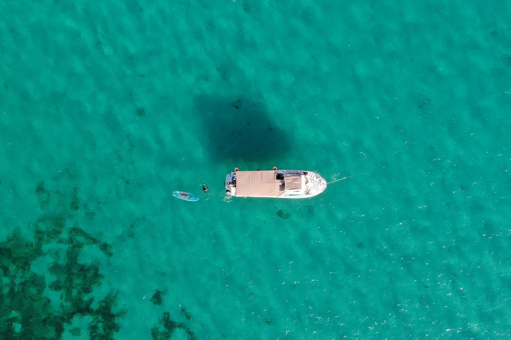

Why go by boat
Most visitors get to know Pula on foot: the amphitheatre, the old town, the waterfront. On the water you see the same place differently. The islands come into view, the cliffs show their layers, and the pace slows down the moment you leave the harbour.
You leave the harbour and the schedule stays on land.
Six excursions at a glance
Brijuni Islands
A panoramic cruise around the national park.
See detailsDay tour with swimming
12:00–16:30. Two hours at St. Jerolim.
See detailsSunset & dolphins
18:00–21:00. Evening cruise around Brijuni.
See detailsCave swimming
Small boat, day or evening.
See detailsRovinj & Venice
Full-day trips by boat.
See detailsPrivate boat
Rent a boat or add a skipper.
See details
Day or evening?
Many guests do both during their stay. The sunset tour start can move by up to 30 minutes with the sunset, and we confirm the exact time when you book.
| Day tour | Sunset tour | |
|---|---|---|
| Time | 12:00–16:30 | 18:00–21:00 |
| Best for | Swimming and island time | Dolphins and evening light |
| Swimming stop | Yes, 2 hours at St. Jerolim | No |
| Park fee | Small fee paid on the island | None |
| Ideal for | Families with children | Couples and friends |
| Price | 50 € | 50 € |
Prices at a glance
| Excursion | Price |
|---|---|
| Day tour (Brijuni and swimming) | 50 € per adult |
| Sunset tour | 50 € per adult |
| Rovinj & Vrsar | 50 € per person |
| Venice | 85–95 € per person |
| Children under 3 | Free |
| Cave swimming, private boat, rentals | On request |
Best time of year
Most excursions run from May to October. In midsummer seats go fast, so plan ahead. June and September are quieter and the sea is still warm.